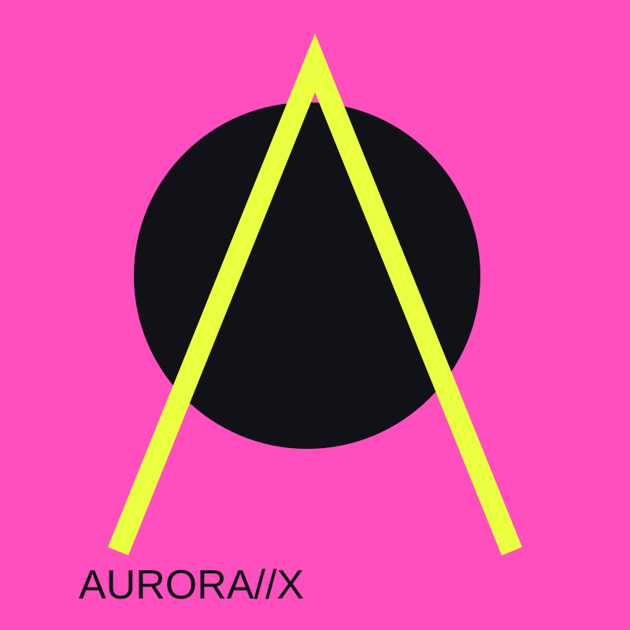
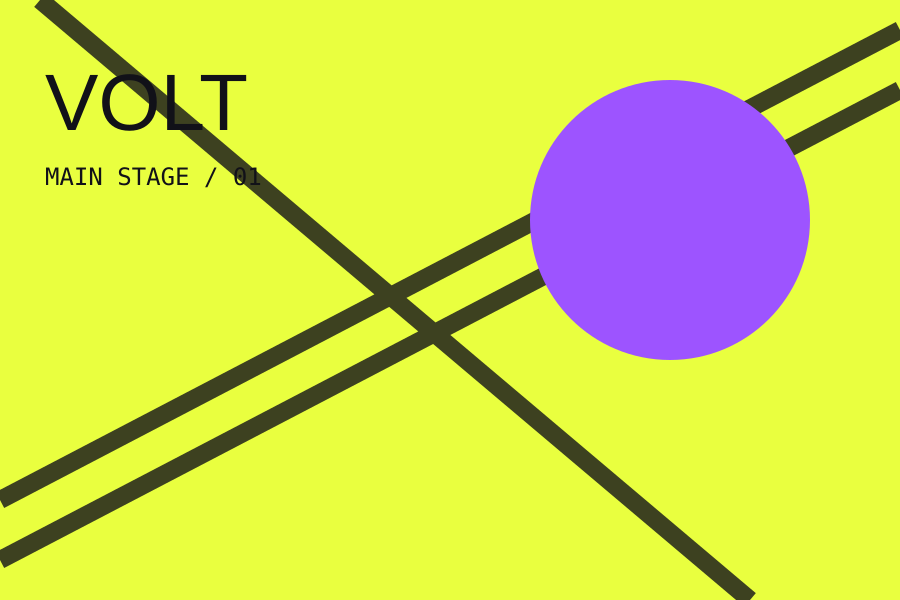
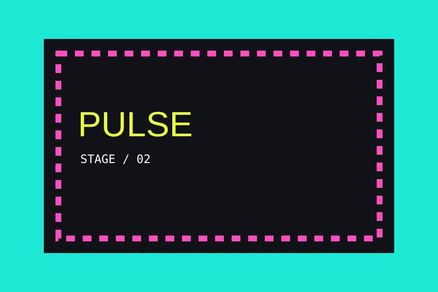

HEADLINER / VOLT
Aurora X
Elektronik eksperimental, 20 Juli.
KILATARA adalah tiga hari musik, visual, dan energi kota. Empat panggung. Enam puluh lebih set. Satu medan untuk bergerak bersama.
AMANKAN AKSES →
Elektronik eksperimental, 20 Juli.

Suara besar, garis keras, energi tanpa jeda.

Ruang intim untuk penemuan baru.
Datang untuk musik yang belum pernah kamu dengar, bertahan untuk orang-orang yang baru kamu temui. KILATARA disusun sebagai rute: panggung, lorong, dan jeda yang selalu punya suara.